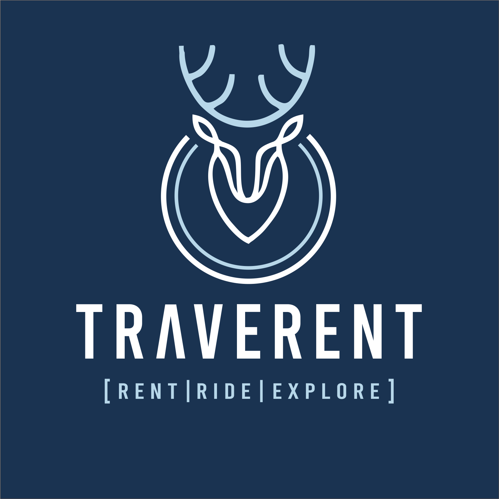

Tentang Kami
Testimoni
Syarat & Ketentuan
FAQ
ID
EN
Mulai Sewa
Kembali

Traverent
Artikel kami untuk perjalanan
yang lebih seru & nyaman
Tips, rekomendasi destinasi, dan panduan seputar sewa motor di Bandung.